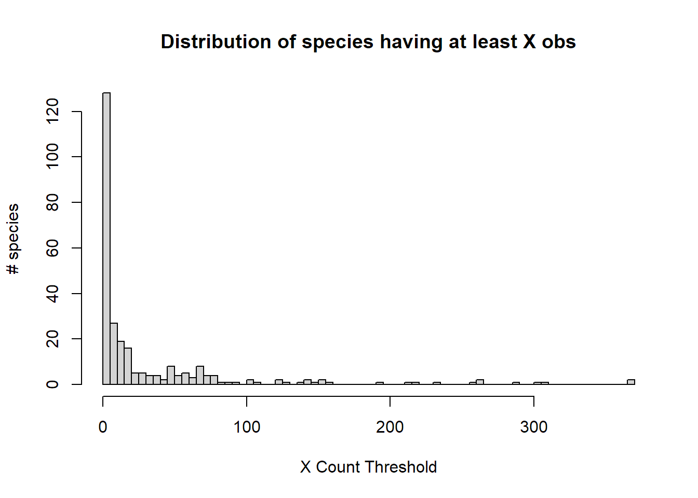
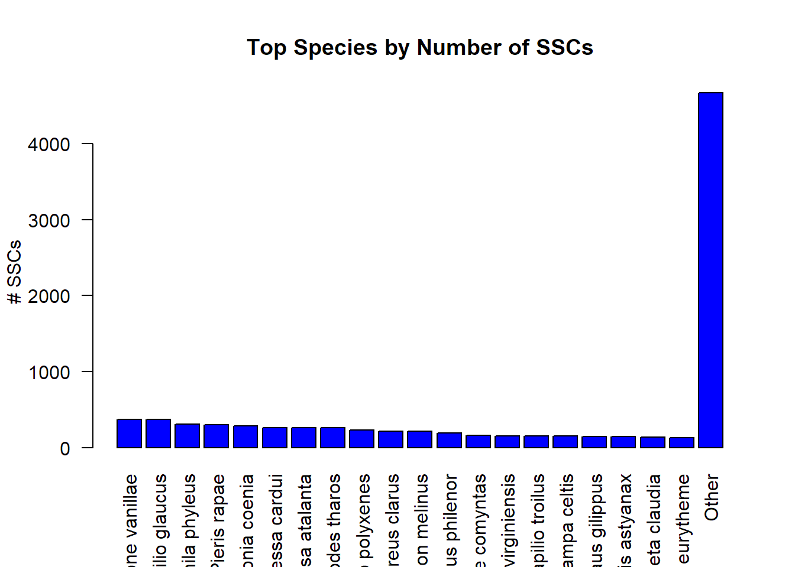
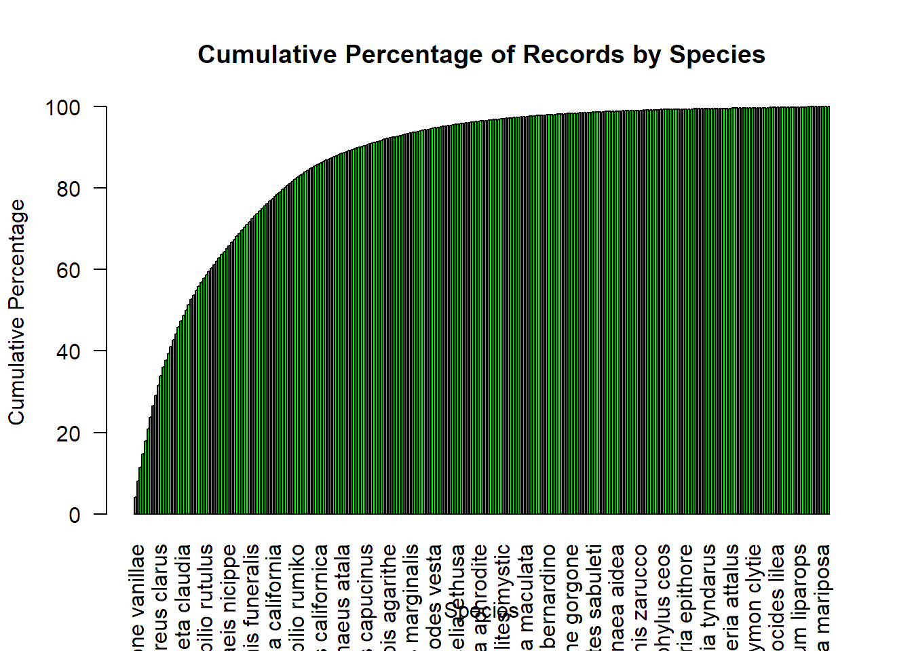
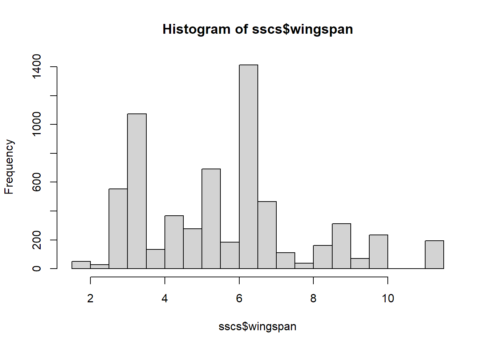
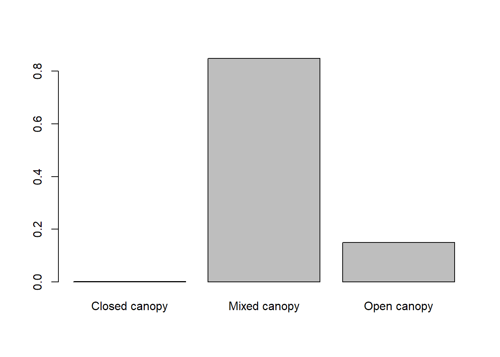

Warning: package 'mapdata' was built under R version 4.2.2
Warning: package 'ggplot2' was built under R version 4.2.2
Warning: The dot-dot notation (`..density..`) was deprecated in ggplot2 3.4.0.
ℹ Please use `after_stat(density)` instead.
ℹ The deprecated feature was likely used in the colorEvoHelpers package.
Please report the issue to the authors.
How are species sampled?
str_c("Number of unique species: ", length(unique(sscs$species)))
[1] "Number of unique species: 274"
# count the number of occurrences of each speciesspecies_counts <-table(sscs$species)# create a bar plotbarplot(species_counts, main ="Distribution of Data by Species", xlab ="Species", ylab ="Number of Records", col ="blue",las =2)
hist(table(sscs$species),breaks=100,main="Distribution of species having at least X obs",ylab="# species",xlab="X Count Threshold")

# Count the occurrences of each species and sortspecies_counts <-sort(table(sscs$species), decreasing =TRUE)# Choose a cutoff, e.g., top 20 species (adjusting your original top_n to match your example)top_n <-20top_species_counts <-head(species_counts, top_n)# Sum the rest into the 'Other' categoryother_count <-sum(tail(species_counts, -top_n))top_species_counts <-c(top_species_counts, Other = other_count)# Create a bar plot for the top N species + "Other"barplot(top_species_counts, main ="Top Species by Number of SSCs", xlab ="", ylab ="# SSCs", col ="blue",las =2) # This rotates the labels on the x-axis to make them more readable

# Sort species by countspecies_counts <-sort(table(sscs$species), decreasing =TRUE)# Calculate cumulative percentagecumulative_perc <-cumsum(species_counts) /sum(species_counts) *100# Create a bar plot for cumulative percentagebarplot(cumulative_perc, main ="Cumulative Percentage of Records by Species", xlab ="Species", ylab ="Cumulative Percentage", col ="green",las =2)

How is wingspan distributed?
plot(hist(sscs$wingspan))

How is habitat preference distributed?
barplot(prop.table(table(sscs$open_closed)))

What does the overall curve look like?
obs_gridded <-readRDS("_targets/objects/obs_gridded")# Create a density plotggplot(obs_gridded, aes(x = local_hour)) +geom_histogram(binwidth =1) +labs(title ="Butterfly Observations Across the Day", x ="Hour of the Day", y ="Density") +scale_x_continuous(breaks =seq(0, 23, by =1), labels =seq(0, 23, by =1),limits=c(8,21))